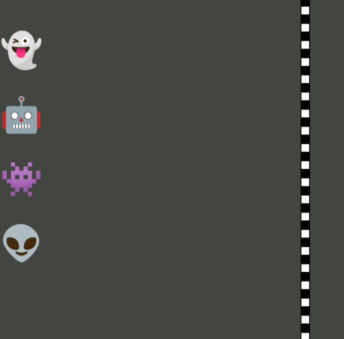
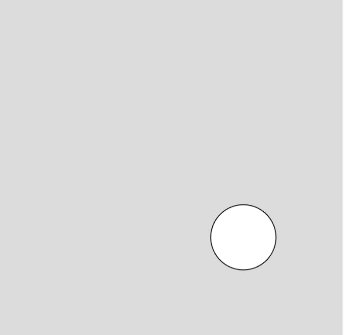
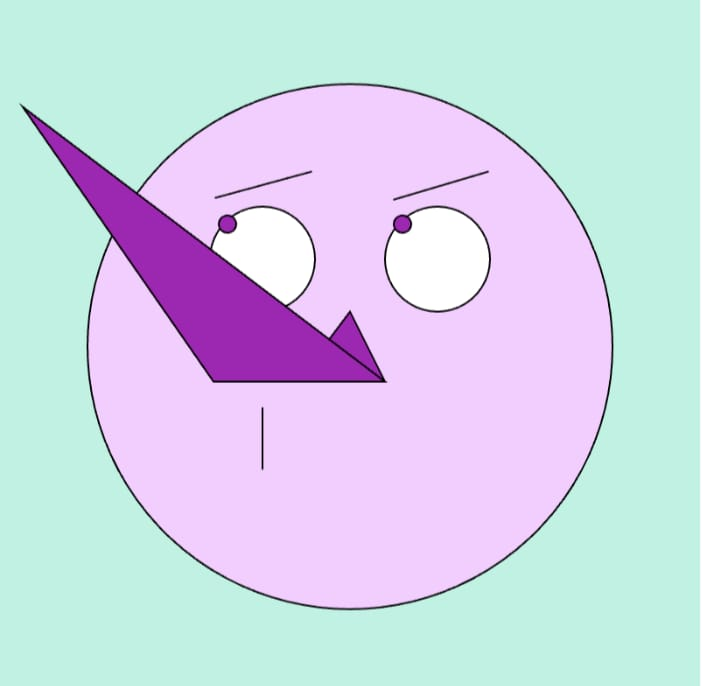

Meus projetos

Corridalinha
Corridalinha é um projeto de diversão, na qual se trata de uma corrida interativa para jogar com os amigos.

Quente ou frio
Quente ou frio é um jogo onde você tem que achar um ponto escondido em uma tela.

Monabique
Monabique, um desenho onde é representado como Monalisa através do movimento onde quer que ela olhe, mais diferenciada com nariz de binoquío.